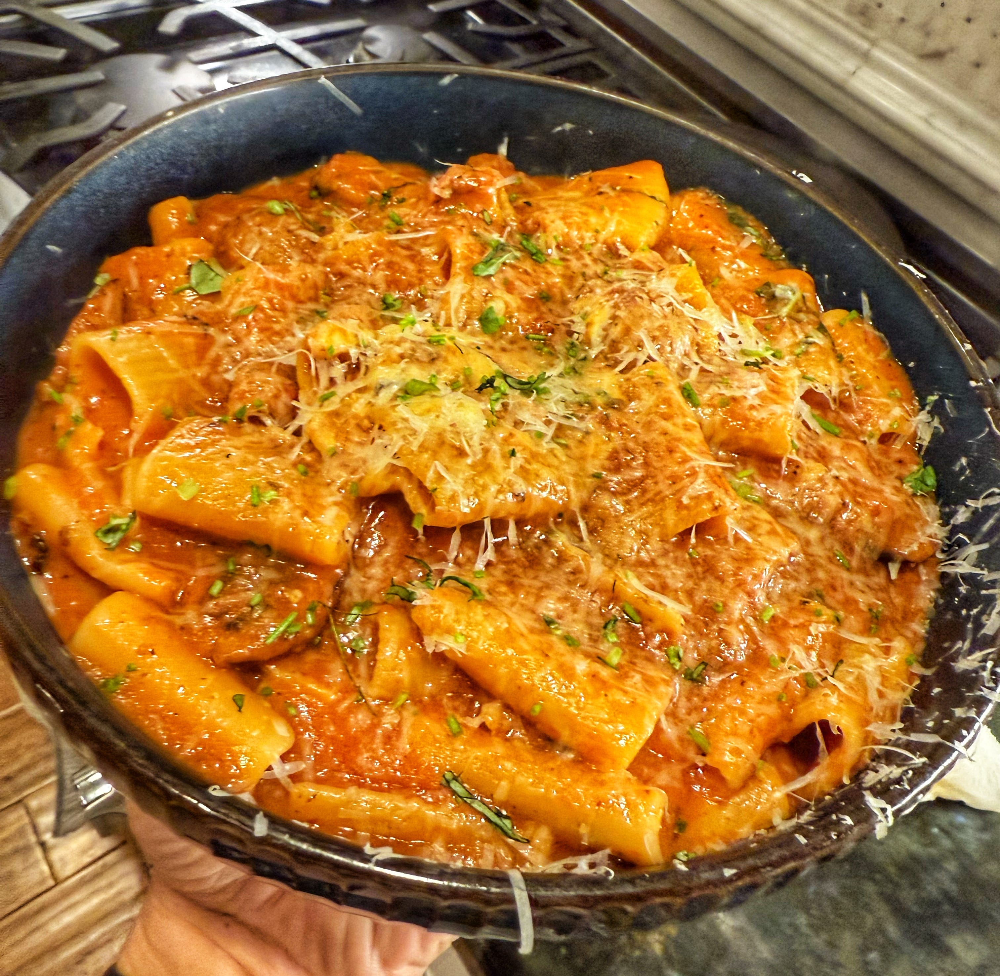

One-Pan Pasta
One-Pan-Pasta • Serves 4–6 • Pasta
Instead of boiling pasta in a big pot of water and throwing away the starchy liquid, this one-pan method cooks the noodles directly in the sauce. The starch stays in the pan, thickening and enriching the sauce so every bite is glossy, clingy, and full of flavor.
Think of it as risotto logic applied to pasta: controlled liquid, steady stirring, and the pasta itself doing most of the work.

Why this works: When pasta cooks in sauce instead of plain water, the starch stays in the pan, naturally thickening the sauce so it clings to the noodles instead of slipping off.
Ingredients (Serves 4–6)
Base & Sausage
- 1 lb Applegate Farms chicken & apple sausage, cooked and sliced (any sausage works — pork, chicken, sweet, or spicy)
- 1 small onion, diced
- 3–4 cloves garlic, minced
- 1 tsp crushed red pepper or aleppo pepper (optional)
- 2 tbsp tomato paste
- 1 (28 oz) can crushed tomatoes
Liquid & Pasta
- 6–8 cups chicken stock or water (you may use up to 2 quarts total as needed)
- 1 lb rigatoni (or any other noodle)
- Salt and black pepper, to taste
Finish
- 3 oz Boursin cheese (garlic & herb)
- 3 tbsp butter
- Olive oil
- Optional: chopped parsley, basil, and grated Parmesan for serving
Method
1. Brown the sausage
- Heat a large, wide pan or pot over medium heat.
- Add a drizzle of olive oil and the sliced sausage.
- Cook until lightly browned. Remove the sausage from the pan and set aside.
2. Build the flavor base
- Add the diced onion to the same pan and cook until soft, 4–5 minutes.
- Stir in the garlic and crushed red pepper and cook just until fragrant.
- Add the tomato paste and cook 1–2 minutes, stirring, until it darkens slightly and smells sweet.
3. Add pasta and tomatoes
- Stir in the crushed tomatoes.
- Add the dry rigatoni directly to the pan and stir to coat in the tomato mixture.
- Season lightly with salt and black pepper.
4. Add liquid and cook
- Pour in enough stock or water to just cover the pasta.
- Bring to a simmer and cook uncovered, stirring often so the pasta doesn't stick.
- As the pasta cooks, it will release starch into the liquid. The sauce will look loose at first — that's normal.
- Keep stirring and add more liquid as needed to keep the pasta mostly submerged and cooking evenly.
- With rigatoni (thick and ridged), expect around 30 minutes of cooking and close to 2 quarts of liquid. Thinner pasta will cook faster and use less liquid.
- Trust the pan, not the clock: you're looking for tender pasta and a sauce that's thick, glossy, and clinging to the noodles.
5. Finish the sauce
- When the pasta is tender and the sauce is nicely reduced, stir the browned sausage back into the pan.
- Turn off the heat.
- Add the butter, one tablespoon at a time, stirring until it melts into the sauce.
- Gently fold in the Boursin cheese until fully melted and emulsified into the sauce.
6. Adjust and serve
- Taste and adjust seasoning with more salt and pepper if needed.
- If the sauce is tighter than you like, loosen it with a small splash of water or stock.
- Finish with chopped parsley or basil and grated Parmesan, if you like.
- Serve straight from the pan while the sauce is silky and hot.
Once you cook pasta this way, boiling and draining in a separate pot starts to feel unnecessary.